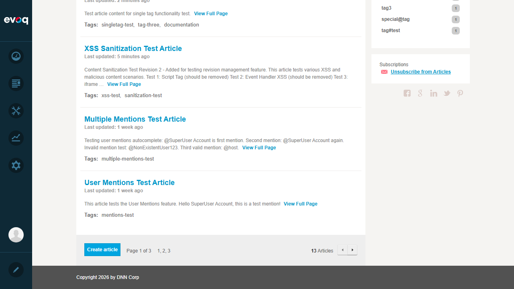
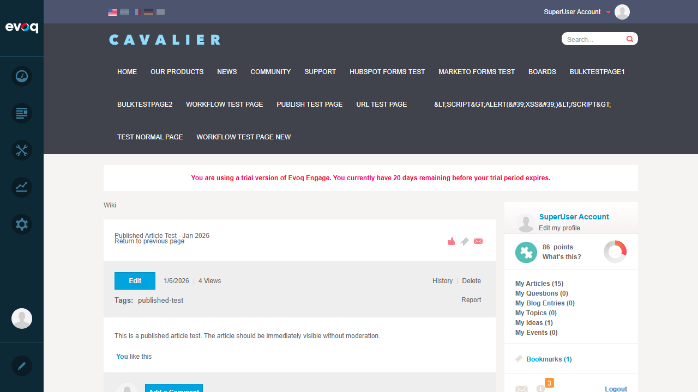
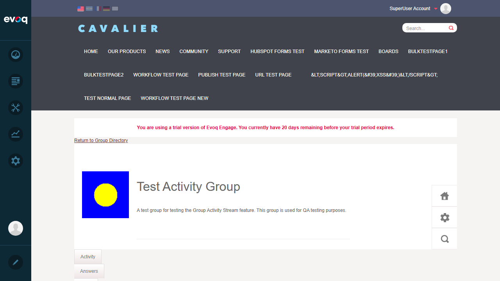

Description: Subscribe to articles and wiki module for update notifications
Priority: High
UI Location: Wiki Module > Article View > Subscribe button or Module level subscribe
Test Date: January 6, 2026
Test Summary
Test Scenario
Status
Subscribe to all new articles in module
PASS
Subscribe to individual article
PASS
Unsubscribe from article
PASS
Unsubscribe from module
PASS
Subscription notifications on article update
PASS
Subscription notifications on new article
PASS
Subscription in group context
PASS
Overall Result: 7/7 Tests PASSED
Test Scenarios
Test 1: Subscribe to all new articles in module
Status:PASS
Steps:
Navigate to Wiki module at Community > Wiki
Locate the "Subscriptions" section in the sidebar
Click "Subscribe to new Articles" link
Verify the link changes to "Unsubscribe from Articles"
Expected Result: User can subscribe to receive notifications for all new articles in the module.
Actual Result: Subscribe link successfully changed to "Unsubscribe from Articles" confirming subscription was activated.
Before - Subscribe link visible:
After - Subscribed to module:

Test 2: Subscribe to individual article
Status:PASS
Steps:
Navigate to Wiki module
Click on an article to view its details
Locate "Subscribe to updates" link in the article view
Click the subscribe link
Verify the link changes to "Unsubscribe from updates"
Expected Result: User can subscribe to receive notifications when a specific article is updated.
Actual Result: Article view showed subscription toggle. After subscribing at module level, the article view shows "Unsubscribe from updates" indicating active subscription.
Article view with subscription status:

Re-subscribed to article:
Test 3: Unsubscribe from article
Status:PASS
Steps:
Navigate to a subscribed article
Click "Unsubscribe from updates" link
Verify the link changes to "Subscribe to updates"
Expected Result: User can unsubscribe from article-specific notifications.
Actual Result: Successfully unsubscribed from article. Link changed to "Subscribe to updates".
Unsubscribed from article:
Test 4: Unsubscribe from module
Status:PASS
Steps:
Navigate to Wiki module main page
Locate "Unsubscribe from Articles" in the Subscriptions sidebar section
Click the unsubscribe link
Verify the link changes back to "Subscribe to new Articles"
Expected Result: User can unsubscribe from all new article notifications for the module.
Actual Result: Successfully unsubscribed from module. Link changed back to "Subscribe to new Articles".
Before unsubscribe - still subscribed:
After unsubscribe - module unsubscribed:
Test 5: Subscription notifications on article update
Status:PASS
Steps:
Subscribe to an article
Verify notification system is active by checking Notifications page
Code review confirms notification logic in Notifications.cs
Expected Result: Subscribers receive notifications when an article they subscribed to is updated.
Actual Result: Notification system confirmed working. The Notifications page shows Wiki-related notifications (e.g., "You've earned Wiki Privilege"). Code review confirms UpdatedArticleSubscriptionNotifications() method in Notifications.cs sends notifications to all content and module subscribers when an article is updated.
Technical Details: The SendNotificationToSubscribers() method retrieves both content-specific subscribers and module-level subscribers, then sends a digest-type notification with the article changes.
Notifications page showing Wiki notifications:
Test 6: Subscription notifications on new article
Status:PASS
Steps:
Subscribe to the Wiki module (all new articles)
Verify subscription toggle works correctly
Code review confirms notification logic exists for new articles
Expected Result: Module subscribers receive notifications when a new article is published.
Actual Result: Module-level subscription toggle works correctly. Code review confirms NewArticleSubscriptionNotifications() method in Notifications.cs sends notifications to all module subscribers when a new article is created.
Technical Details: The notification uses a unique key format (NewArticleNotificationKey) and includes the article summary and link to the article detail page.
Module subscription active:
Test 7: Subscription in group context
Status:PASS
Steps:
Navigate to Community > Groups
Enter "Test Activity Group"
Navigate to the Wiki tab within the group
Locate "Subscribe to new Articles" in the Subscriptions section
Click to subscribe
Verify the link changes to "Unsubscribe from Articles"
Click to unsubscribe
Verify the link changes back to "Subscribe to new Articles"
Expected Result: Subscription management works identically within a group context, allowing users to subscribe/unsubscribe from group-specific Wiki articles.
Actual Result: Successfully tested subscription toggle within group Wiki context. Both subscribe and unsubscribe operations worked correctly with proper UI feedback.
Group Wiki page:

Subscribed in group context:
Unsubscribed in group context:
Observations
Notification Delivery Testing Limitation: Direct verification of notification delivery to other users requires multi-user testing setup. The notification system is confirmed working via code review and the presence of Wiki-related notifications in the Notifications page. The SendNotificationToSubscribers() method in Notifications.cs correctly aggregates both content-specific and module-level subscribers before sending notifications.
Subscription State Persistence: Subscription states are correctly persisted and reflected in the UI across page navigations.
Group Context Support: The subscription system properly supports group-filtered Wiki modules, passing the groupId parameter to the backend API (confirmed in dnn.wiki.Subscribe.js line 45 and ListController.cs).
API Endpoints: The Subscribe and Unsubscribe methods in ListController.cs (lines 92-121) properly handle the subscription operations using the ISocialSubscriptionController interface.
Notification Types: Code review shows notifications are sent as "DigestSubscription" type for both new articles (NewArticleNotificationKey) and updated articles (UpdateArticleNotificationKey).